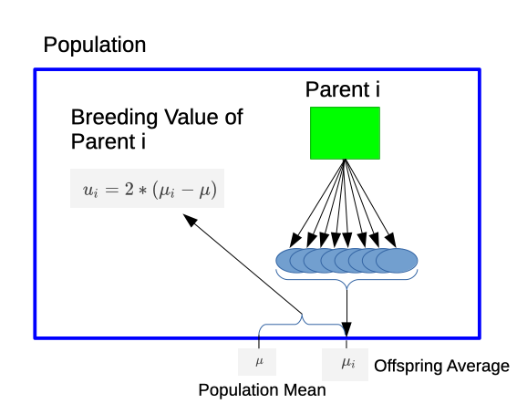
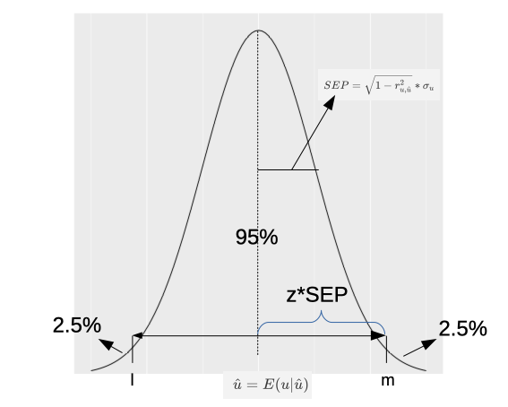
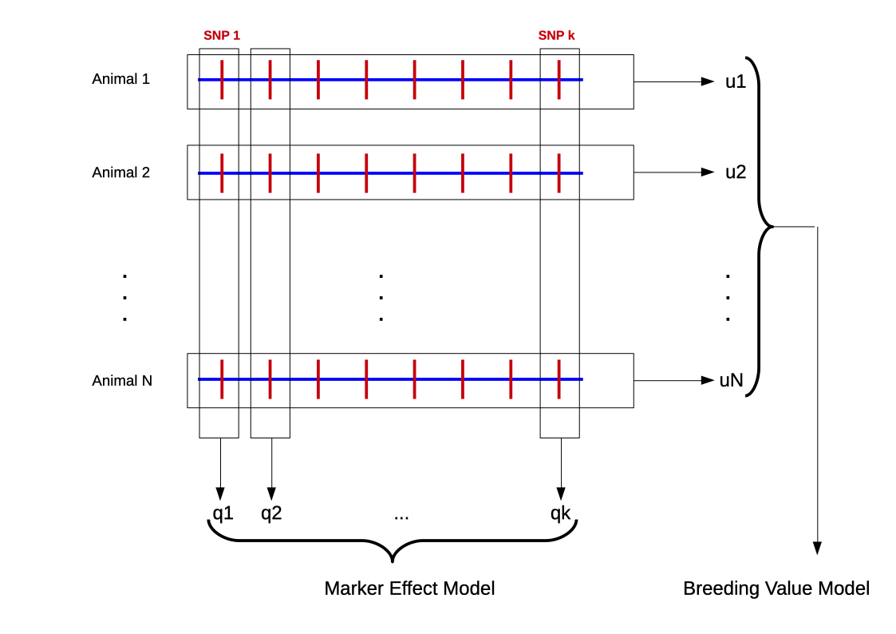
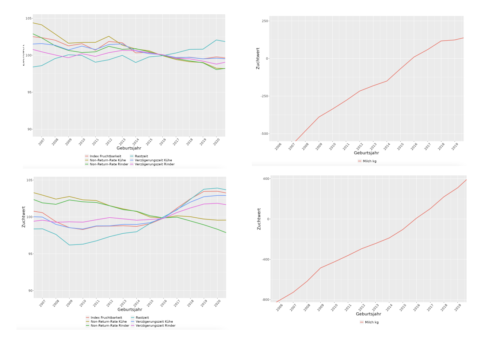
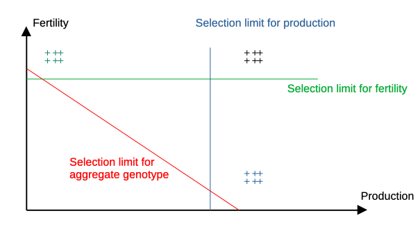

Prediction of Breeding Values
Recap Statistical Modelling
- Capture uncertainty due to stochastic relationship
- Components:
- response variable \(y\)
- predictor variables \(x_1, x_2, \ldots, x_k\)
- error term \(e\)
- function \(m(x)\)
Model Selection
- For fixed effects, select relevant predictors via model selection
- Recommended approach: backwards-elimination
- start with full model
- discard predictor variable that increases residual sums of squares the least and get current reduced model
- repeat step 2 until all predictors are eliminated
- from above resulting sequence of models, select the one with minimal criterion
- Criterion can be Mallow \(C_p\), AIC or BIC
Variation
- Any new trait can only be used for selection, if variation is found in population
- Since change in trait via selection happens between generations, variation must also be at genetic level
- Use mixed linear effects model to estimate genetic variance, often reported as heritability
\[h^2 = \frac{\sigma_u^2}{\sigma_p^2}\]
Selection Criterion
- If heritability is confirmed
- Selection criterion is needed
- Animals have to be ranked according to the criterion
- Best animals selected as parents of future generation
What are breeding values
Definition: two times difference between offspring of a given parent from population mean
Practical Considerations
- Definition of breeding value is based on biological fact that parent passes half of its alleles to offspring
- In practice, definition cannot be used
- breeding values depend on population (allele frequencies)
- most parents do not have enough offspring
- breeding values are needed before animals have offspring
- different environmental factors not considered
Solution
- Use genetic model to predict breeding values based on phenotypic observations
- Genetic model decomposes phenotypic observation (\(y_i\)) in different components
\[y_i= \mu + u_i + d_i + i_i + e_i\] where \(\mu\) is the general mean, \(u_i\) the breeding value, \(d_i\) the dominance deviation, \(i_i\) the epistasis effect and \(e_i\) the random error term.
Solution II
- For predicting breeding values \(d_i\) and \(i_i\) are often ignored, leading to a simplified version of the genetic model
\[y_i= \mu + u_i + e_i\]
- Expected values and variance-covariance matrix
How to Predict Breeding Values
- Predicted breeding values (\(\hat{u}\)) are a function of the observed phenotypic data (\(y\))
\(\rightarrow\) \(\hat{u} = f(y)\)
- What should \(f()\) look like?
- Goal: Maximize improvement of offspring generation over parents
\(\rightarrow\) \(\hat{u}\) should be conditional expected value of true breeding value \(u\) given \(y\):
\[\hat{u} = E(u | y)\]
Derivation
- Assume: multivariate normality of \(u\) and \(y\) and \(E(u) = 0\), then
- \(\hat{u}\) consists of two parts
- \((y - E(y))\): phenotypic observations corrected for environmental effects
- \(cov(u,y^T) * var(y)^{-1}\): weighting factor of corrected observation
Unbiasedness
- Expected value (\(E(\hat{u})\))
- With \(E(u) = 0\), it follows \(E(\hat{u}) = E(u) = 0\)
Variance
- \(var(\hat{u})\) and \(cov(u, \hat{u})\) important for quality of prediction
Accuracy
- Measured by \(r_{u,\hat{u}}\)
- Recall \(cov(u, \hat{u}) = var(\hat{u})\)
- Reliability (“Bestimmtheitsmass”): \(B = r_{u,\hat{u}}^2\)
Prediction Error Variance (PEV)
- Variability of prediction error: \(u - \hat{u}\)
- Obtained from coefficient matrix of mixed model equations
- Used to compute reliability
Conditional Density
- Assessment of risk when using animals with predicted breeding values with different reliabilities quantified by \(f(u|\hat{u})\)
- Multivariate normal density with mean \(E(u|\hat{u})\) and variance \(var(u|\hat{u})\)
Confidence Intervals (CI)
- Assume an error level \(\alpha\), this results in \(100 * (1-\alpha)\%\)-CI
- Typical values of \(\alpha\) \(0.05\) or \(0.01\)
- With \(\alpha = 0.05\), the \(95\%\)-CI gives interval around mean which covers a surface of \(0.95\)
CI-Plot

CI Limits
- lower limit \(l\) and upper limit \(m\) are given by
- \(z\) corresponds to quantile value to cover a surface of \((1-\alpha)\)
- Use R-function
qnorm()to get value of \(z\)
Linear Mixed Effects Model
- Use more realistic model for prediction of breeding values
Expected Values and Variances
\[\begin{equation} E \left[\begin{array}{c} y \\ u \\ e \end{array} \right] = \left[\begin{array}{c} Xb \\ 0 \\ 0 \end{array} \right] \notag \end{equation}\] \[\begin{equation} var \left[\begin{array}{c} y \\ u \\ e \end{array} \right] = \left[\begin{array}{rrr} ZGZ^T + R & ZG & 0 \\ GZ^T & G & 0 \\ 0 & 0 & R \end{array} \right] \notag \end{equation}\]Solutions
- Same as for simple model
with
\[\begin{equation} \hat{b} = (X^TV^{-1}X)^{-}X^TV^{-1}y \notag \end{equation}\]corresponding to the general least squares solution of \(b\)
Problem
- Solution for \(\hat{u}\) contains \(V^{-1}\) which is large and difficult to compute
- Use mixed model equations
Sire Model
\[\begin{equation} y = Xb + Zs + e \notag \end{equation}\]where \(s\) is a vector of length \(q_s\) with all sire effects.
\[\begin{equation} var(s) = A_s * \sigma_s^2 \notag \end{equation}\]where \(A_s\): numerator relationship considering only sires
Animal Model
\[\begin{equation} y = Xb + Za + e \notag \end{equation}\]where \(a\) is a vector of length \(q_a\) containing the breeding values
\[\begin{equation} var(a) = A \sigma_a^2 \notag \end{equation}\]where \(A\) is the numerator relationship matrix
Genomic BLUP (GBLUP)
- marker-effect models: SNP-loci as random effects (MEM)
- breeding value based models: genomic breeding values as random effects (BVM)
MEM and BVM

Marker Effect Model (MEM)
- Marker effects (\(a\)) as random in a linear mixed effects model
- Solution of marker effects via mixed model equations
where \(\sigma_a^2\) is the SNP-effect variance component.
- Genomic breeding value for animal \(i\) is computed as sum over appropriate values of \(\hat{a}\) given by genotype of animal \(i\)
Breeding Value Based Model
- Genomic breeding values (\(u\)) as random effects in linear mixed effects model
- Solutions
- Genomic breeding values correspond to solutions for \(\hat{u}\)
How Does GBLUP Work
\[\begin{equation} \begin{bmatrix} X^TX & X^TZ & 0 \\Z^TX & Z^TZ + G^{(11)} & G^{(12)} \\0 & G^{(21)} & G^{(22)}\end{bmatrix} \begin{bmatrix} \hat{b} \\\hat{g}_1 \\\hat{g}_2\end{bmatrix} = \begin{bmatrix} X^Ty \\Z^Ty \\0\end{bmatrix} \notag \end{equation}\]
- \(G^{(11)}\): animals with phenotypic observations
- \(G^{(22)}\): animals without phenotypic observations
Summary for One Trait
- Predicted breeding values with or without genomic information
- Animals can be ranked according to predicted breeding values
- Problems:
- Not only one trait should be improved
- Selection for one trait changes also other traits via correlated selection response
\(\rightarrow\) see genetic trends at: https://1-htz.quagzws.com/shiny/users/zws/genTrendHolstein_DE/index.Rmd
Example Fertility and Production

Multi-Trait Selection

Types of Multi-Trait Selection
- Tandem selection
- select for one trait at the time
- after goal has been reached change to different trait
- Independent selection limits
- select only animals which fullfill criteria in all traits
- Selection according to aggregate genotype
- combine traits into aggregate genotype \(H\)
- define \(H\) as weighted sum of true breeding values and economic values
- use selection index \(I\) to estimate \(H\)
Aggregate Genotype
Definition in vector notation: \(H = v^T \cdot u\)
where
- \(u\): vector of true breeding values
- \(v\) vector of economic values which are marginal changes in profit for a small change in the population mean of the trait
Estimate \(H\) via index \(I\), hence \(\hat{H} = I = b^T x\)
with
- \(x\): a vector of information sources
- \(b\): a vector of unknown weights.
Determine \(b\) such that \(var(I-H)\) is minimal.
Find \(b\) …
… such that \(var(I-H)\)
\[\begin{align} var(I-H) &= var(I) - 2*cov(I,H) + var(H) \notag \\ &= var(b^T x) - 2 * cov(b^T x, v^Tu) + var(v^Tu) \notag \\ &= b^Tvar(x)b - 2 * b^Tcov(x,u^T)v + v^Tvar(u)v \notag \\ &= b^TPb - 2 * b^TCv + v^TGv \notag \end{align}\]
Setting \(\frac{\partial\ var(I-H)}{\partial b} = 0\) leads to
\[Pb = Cv\]
Hence
\[b = P^{-1}Cv\]
Special Case
- Same traits in \(H\) and in \(I\)
- Use predicted breeding values \(\hat{u}\) from multivariate BLUP animal model as information source \(x\)
- Then it follows
\[b = P^{-1}Cv = var(\hat{u})^{-1}\cdot cov(\hat{u}, u^T) \cdot v = v\]